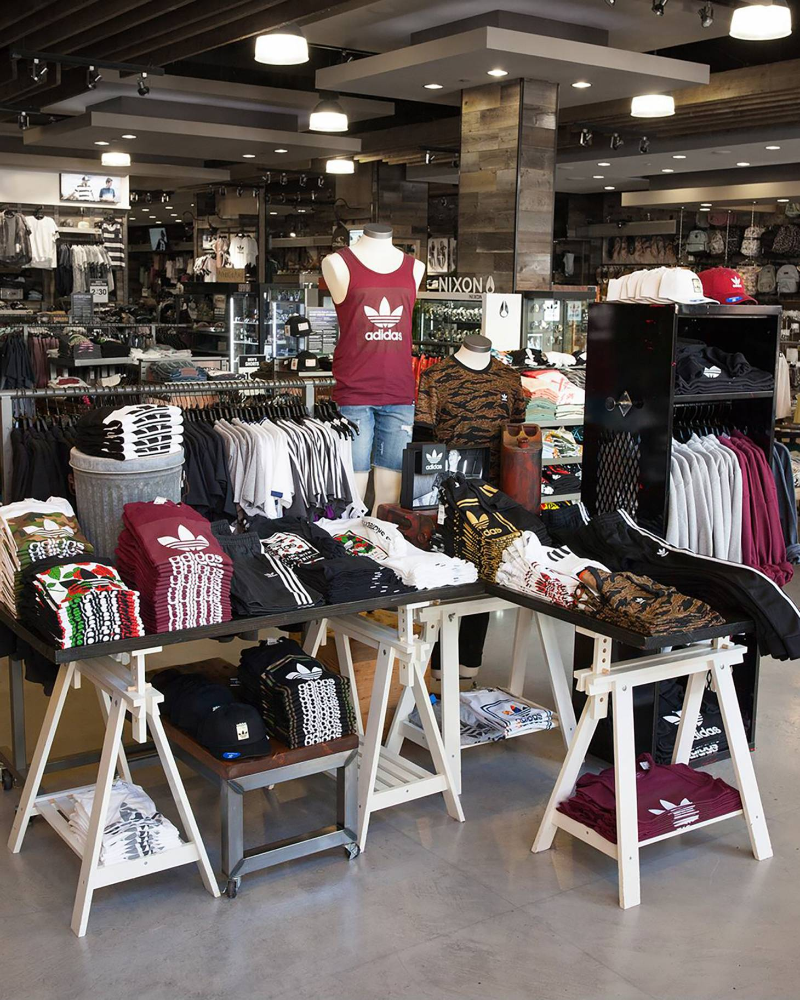
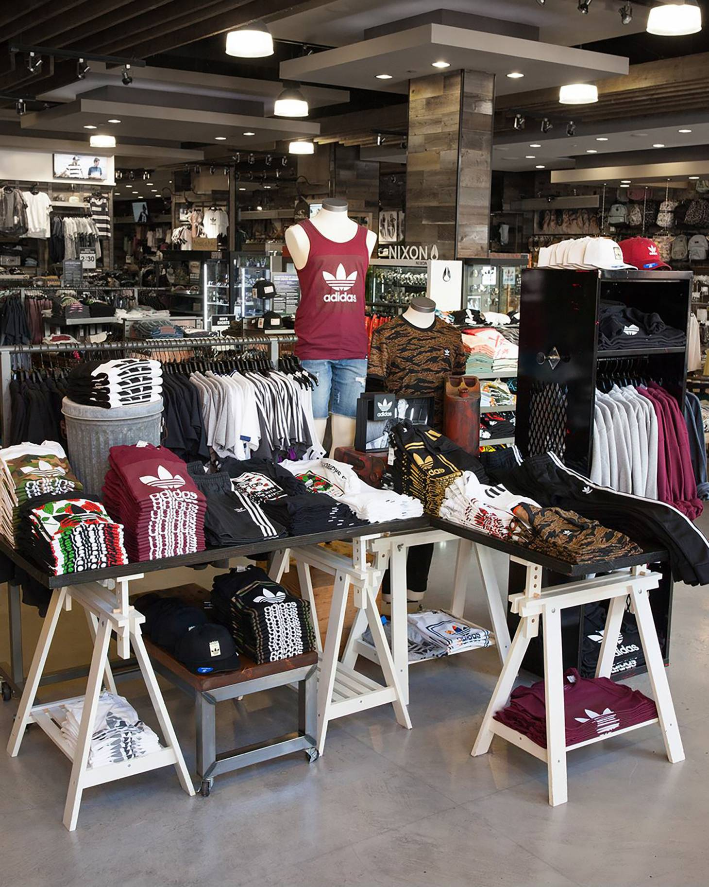

Lauren Dulski
Over three years I’ve had experience in retail and customer service. I’m well-spoken, assertive, and solid product knowledge helped build genuine customer connections. I excel at multi-tasking in fast-paced environments, completing projects within tight deadlines. Moreover, I have experience and proficient knowledge in Word and Excel. Not only that, but I have good project management skills and communication skills to provide excellent customer service.
My vast work experiences show my ability to thrive in diverse settings. In 2020, I was employed at Target as a guest advocate. Under this position, I handled money transactions, engaged customers, and assisted guest service with drive-up orders and returns. Often, surpassing sales targets with keen attention to detail and the ability to adapt to new rules, regulations, and environments. However, after spending a year there, I decided to change jobs in search of better opportunities. In 2021, I was hired at Tillys as a sales associate. There, I handled money, assisted customers in finding apparel, managed fitting rooms, reorganized the sales floor, and helped put merchandise on the sales floor. Unfortunately, this position lasted only four months as I was heading to college.
Nevertheless, I learned how to collaborate and communicate effectively with my co-workers to determine customer needs. In 2022, I was employed again by Target, but this time as a specialty sales in style. During my time in style, I pushed merchandise to the sales floor, reorganized it, engaged with guests to determine their needs, assisted guest service with returns, managed fitting rooms, and handled money transactions. Again, this position only lasted fourth months as I was going back to college for my second year. Despite my short time at Target, I enjoyed providing guest satisfaction to customers, the flexible work hours, and the friendly environment.
Following this position, I worked at Lush as a seasonal sales ambassador over winter break. At Lush, I built rapport with customers to determine their skincare needs, helped meet sales goals, restocked and reorganized the store, and handled money transactions. Despite my short time at Lush, I built my confidence as a sales associate and built strong relationships with my co-workers. Also, my ability to retain product knowledge was developed and strengthened as I had to remember the ingredients in all the products to sell and recommend to customers. Finally, my most recent job experience is working as a sales associate at Lush. Thanks to my previous experience at Lush, it was an easy transition coming back to Lush as I had already undergone extensive training and product knowledge to sell and recommend products to customers effectively.
My previous working experience in vast retail experience has allowed me to adapt to fast-paced, changing environments while still maintaining good customer service and product knowledge. Additionally, my strong communication and organization skills allow me to complete multiple tasks under sharp deadlines. Not only that, but I am able to work successfully in groups and individually. Because of this, I was assigned as a trainer in style at Target due to my impressive work ethic.
Experience
Sales Associate
• Assited guests to find clothing
• Managed fitting rooms
• Reoganized the sales floor
Sales Ambassador
•Maintained product knowledge to contribute to the sales goals
•Handled money transactions
•Built rapport with customers to determine needs
•Restocked and reoganzied the sales floor
Education
UC Riverside
Portfolio




